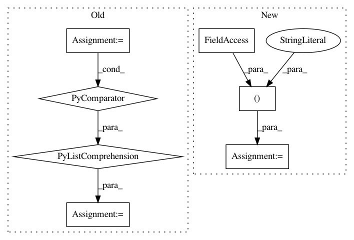

960a107ad419d2690e352972950e76495deb1ad6,scripts/detection/ssd/eval_ssd.py,,,#,94
Before Change
args = parse_args()
// training contexts
ctx = [mx.gpu(int(i)) for i in args.gpus.split(",") if i.strip()]
ctx = ctx if ctx else [mx.cpu()]
// network
net_name = "_".join(("ssd", str(args.data_shape), args.network, args.dataset))
After Change
// network
net_name = "_".join(("ssd", str(args.data_shape), args.network, args.dataset))
if args.quantized:
net_name = "_".join((net_name, "int8"))
args.save_prefix += net_name
if args.pretrained.lower() in ["true", "1", "yes", "t"]:
net = gcv.model_zoo.get_model(net_name, pretrained=True)
else:
In pattern: SUPERPATTERN
Frequency: 3
Non-data size: 7
Instances
Project Name: dmlc/gluon-cv
Commit Name: 960a107ad419d2690e352972950e76495deb1ad6
Time: 2019-03-18
Author: xinyu1.chen@intel.com
File Name: scripts/detection/ssd/eval_ssd.py
Class Name:
Method Name:
Project Name: ClimbsRocks/auto_ml
Commit Name: 71928897ddc96545ac7dcbca5f0a569658cd272d
Time: 2017-12-03
Author: climbsbytes@gmail.com
File Name: auto_ml/utils_feature_selection.py
Class Name: FeatureSelectionTransformer
Method Name: transform
Project Name: tflearn/tflearn
Commit Name: 44874bed267e008be9bee5d85a4f4040b854d246
Time: 2017-05-25
Author: aymeric.damien@gmail.com
File Name: examples/images/dcgan.py
Class Name:
Method Name: